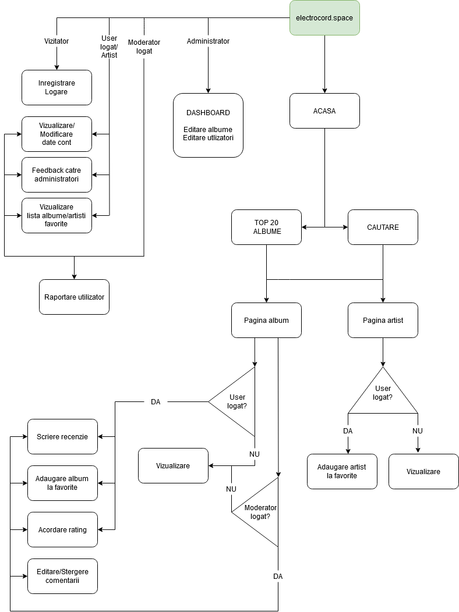

Electrocord
Despre
Site-ul Electrocord va fi un site care indexeaza albumele casei de discuri Electrocord. Pe de o parte, site-ul va functiona ca promotor pentru noile albume ale casei de discuri, dar principalul scop al site-ului va fi crearea de ratinguri si scrierea recenziilor de catre utlizatoripentru albume. De asemenea, fiecare artist care a colaborat cu casa de discuri Electrocord va avea o pagina de prezentare. Acestia vor avea conturi speciale prin care vor putea interactiona cu fanii si raspunde la recenziile albumelor.
Pagini
- Pagina de start
va fi locul de pornire al intregului site. Aici va fi prezentat un "feed" cu cele mai noi albume, va exista zona de login pentru useri si campul de cautare.
- Pagina utilizatorului
va fi locul unde utilizatorul isi va putea manageria contul.
- Paginile albumelor
- Fiecare album va avea propria pagina unde vor fi afisate date despre album, ratingul si recenziile acestuia.
- Pagina de cautare
va fi locul unde vor aparea rezultatele cautarii unui termen.
- Pagina Top 20
va fi pagina unde va fi afisat clasamentul celor mai apreciate 20 de albume.
- Dashboardul administratorului
va fi o pagina la care publicul nu va avea acces de unde administratorii vor putea manageria baza de date, precum corecturi la albume sau adaugarea de albume noi.
Baza de date
- Useri
- Moderatori
- Artisti
- Albume
- Ratinguri
Tipuri de useri
- Userul
- Va scrie recenzii pentru albume.
- Va da un rating albumelor.
- Va putea adauga la favorite albumele preferate.
- Isi va putea edita profilul, inclusiv datele de conectare sau va putea cere stergerea contului.
- Va putea lasa feedback despre site administratorilor.
- Artist
- Va beneficia de toate functionalitatile disponibile userului
- Numele sau va fi evidentiat.
- Moderator
- Va beneficia de toate functionalitatile disponibile userului
- Numele sau va fi evidentiat - diferit de al artistilor
- Va putea edita sau sterge comentarii
- Va putea raporta si recomanda stergerea anumitor conturi de utilizatori catre administrarori.
- Administrator
- Va avea acces la Dashboardul de management al bazelor de date.
- Va putea sterge conturi de orice alt tip.
- Va putea adauga, edita sau elimina albume, inclusiv toate metadatele precum poza, anul lansarii, lista de melodii sau ratingurile - de la caz la caz.
Diagrama site-ului
